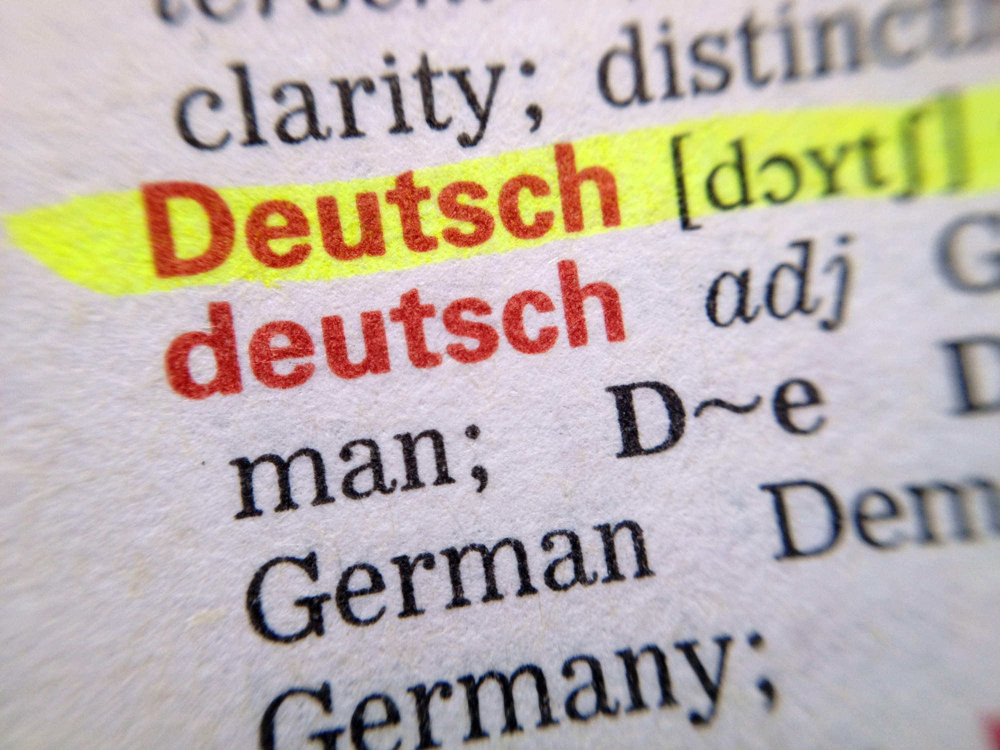

World Top 10th Langauge Workld Wide!
Mastering the Art of German Language: Your Ultimate Guide
Welcome to our comprehensive resource for mastering the German language. Whether you're a beginner looking to take your first steps in this beautiful and influential language or an intermediate learner striving to reach fluency, our website is your go-to destination. We provide a wealth of information, lessons, tips, and cultural insights to help you on your journey to becoming a proficient German speaker. From essential grammar and vocabulary to practical conversation skills, we've got you covered. So, dive in and explore the world of German language and culture with us!
Start Learning! Learn MoreFor the true Crypto-connoisseur
This unique character is used exclusively in German, and it represents a double "s" sound, similar to the English "ss."
Germany is known for its rich history of inventions and innovations. Many famous inventions have come from German inventors and scientists over the years.
Still not convinced? Do not waste your time, start learning German now, Los! Los! Los!